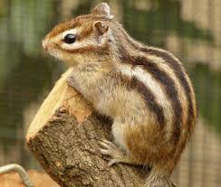

(백엔드 애들이 받아올 사용자 아이디)님 로그아웃

· 이름 : 다람쥐(Squirrel))
· 수명 : 5~8년
· 크기 : 15~16cm
· 먹이 : 열매, 종자류
· 서식지 : 산림, 초원 등
· 부연 설명 : 땅속에 굴을 깊이 파고 보금자리를 만든 후 보금자리에서 가까운 곳에 월동을 위해 1∼2개의 먹이 저장창고를 만들고 여러 가지 종자나 열매 등을 저장해 둔다.
때때로 잠에서 깨어나 먹이를 먹은 후에 다시 겨울잠을 하기도 한다.
9월 하순부터 10월 상순에 평균기온이 8∼10℃가 되면 터널 속으로 들어가 겨울잠을 자기 시작하는데, 겨울잠은 진정한 동면이 아닌 가수면 상태이다.
· 수명 : 5~8년
· 크기 : 15~16cm
· 먹이 : 열매, 종자류
· 서식지 : 산림, 초원 등
· 부연 설명 : 땅속에 굴을 깊이 파고 보금자리를 만든 후 보금자리에서 가까운 곳에 월동을 위해 1∼2개의 먹이 저장창고를 만들고 여러 가지 종자나 열매 등을 저장해 둔다.
때때로 잠에서 깨어나 먹이를 먹은 후에 다시 겨울잠을 하기도 한다.
9월 하순부터 10월 상순에 평균기온이 8∼10℃가 되면 터널 속으로 들어가 겨울잠을 자기 시작하는데, 겨울잠은 진정한 동면이 아닌 가수면 상태이다.